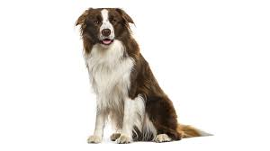

Dogs are domesticated mammals, not natural wild animals. They were originally bred from wolves. They have been bred by humans for a long time, and were the first animals ever to be domesticated. Dogs are known for their loyalty and faithfulness, making them an ideal companion.
Why Adopt a Dog?
Adopting a dog can bring joy and happiness into your life. Dogs are known for their loyalty and can provide companionship, especially for those who live alone or are elderly. By adopting a dog, you are also giving a second chance to a life that may have been abandoned or mistreated.
Different Breeds, Different Personalities
Dogs come in all shapes and sizes, each with their own unique personality. Some breeds are known for their boundless energy, while others are more laid-back. Some dogs are protective and make excellent guard dogs, while others are gentle and make great therapy dogs. It's important to choose a breed that fits well with your lifestyle.
The Responsibility of Dog Ownership
Owning a dog is a big responsibility. Dogs require regular exercise, a balanced diet, regular vet check-ups, and lots of love and attention. Before deciding to adopt a dog, it's important to make sure you're ready for the commitment.